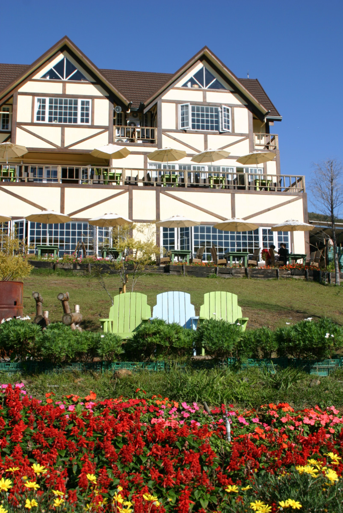
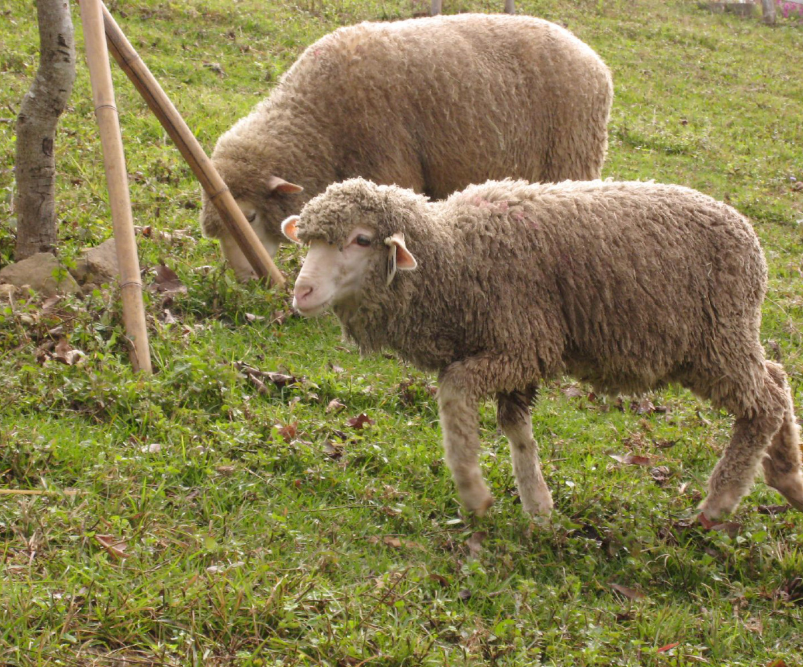
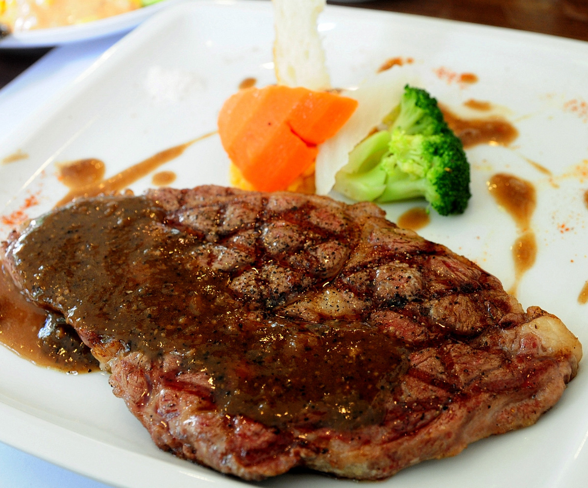
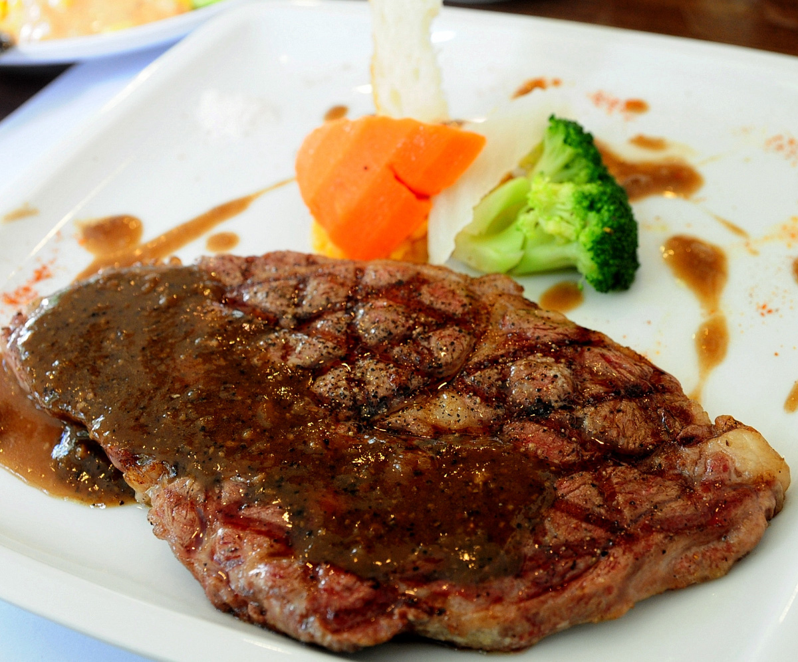
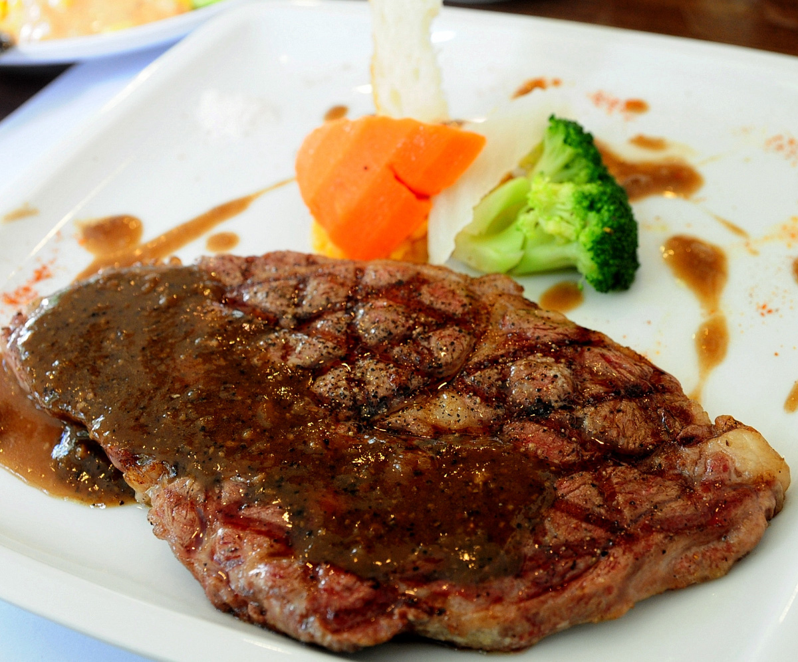

綠光森林位於復興區往東眼山的路上，標高700公尺，遠眺南北插天山，是復興區公認景色最美的景點！ 園區占地三甲，有飼養美麗諾綿羊，園區有裝置藝術可拍照，還可以體驗自己餵綿羊。綠光的春天有螢火蟲、夏天採桂竹筍、秋天賞落雨松，冬天常有雲海，所在霞雲里常現美麗的彩霞，一年四季美不勝收，是北部的小清境！ 綠光森林除了民宿提供住宿服務， 園區平日都可入園，1樓是可容納百人的餐廳，有供應早餐、午餐、下午茶，是休閒放鬆的好地方！

 

